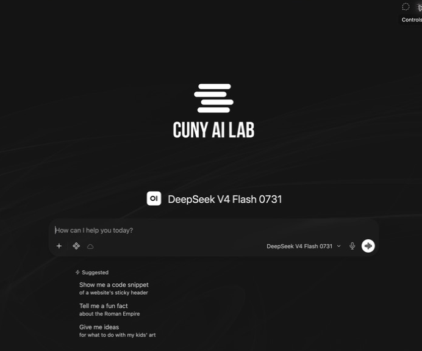
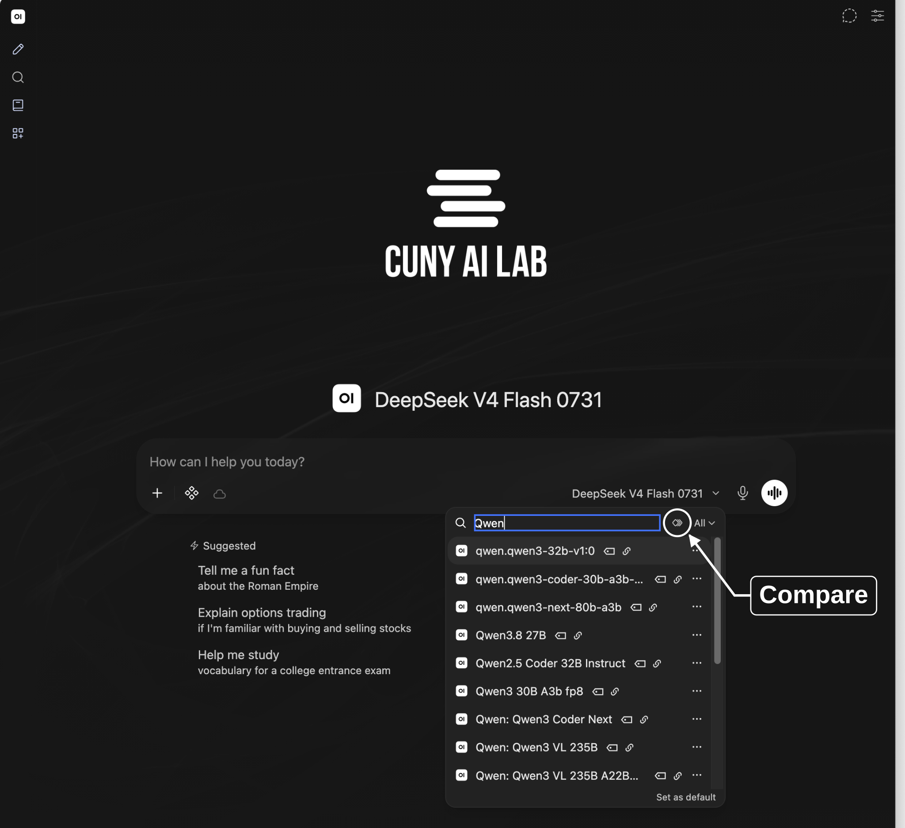
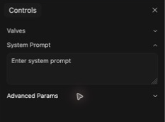

Select model ID on bottom right of message box.
Type a request, send it, then ask a follow-up. Open New Chat when you want to begin with fresh conversation history.
Workshop 1 of 3
Compare and configure models for teaching and research
CUNY AI Lab Sandbox
Developed by Stefano Morello and Zach Muhlbauer
Before attending, request individual access and sign into Sandbox.
ailab.gc.cuny.edu/request-access/

Select model ID on bottom right of message box.
Type a request, send it, then ask a follow-up. Open New Chat when you want to begin with fresh conversation history.

Open model selector. Select Compare beside search field, then choose two models.
If Compare is unavailable, send identical prompts in separate new chats.
Start a new chat before comparing models.
Compare how two small models interpret this sentence.
The nurse yelled at the doctor because she was late. Who was late?
Send this question to both models.
“She” could refer to either person. This sentence does not establish who was late.
Ask both models this question.
The car wash is 50 meters from me. Should I walk or take the car? Explain your reasoning.
What do you think this person wants to accomplish?


Compare how each model interprets your question and explains its recommendation.
Save both responses with your prompt and selected model IDs.
A system prompt defines how a model should behave throughout a conversation.
Questions or tasks you enter in chat.
Instructions defining model behavior, tone, boundaries, and response style.
Test whether your selected model follows these instructions.

Use Chat Controls for this exercise. Defaults in Settings apply across chats.
Add these instructions in System Prompt under Chat Controls. Regenerate responses to your original prompt.
Help the user examine a question before settling on an answer. Identify the goal and the information stated in the question. Separate those facts from assumptions needed to answer it. If different assumptions would change the answer, explain the alternatives briefly or ask one focused question. Give a concise answer that states its assumptions. Do not invent missing context. Revise the answer when the user adds relevant information.
Keep base models and other settings unchanged. Record any differences you cannot control.
Open Workspace → Models.
Open a sample model and review its Base Model and System Prompt. Compare those instructions with your tested prompt.
Continue in chat if Workspace is unavailable.

Open a model to view its base model and system prompt. Select Create to configure your own.
Attach documents under Knowledge. Add reusable instructions under Skills and operations such as web search under Tools.

A custom model combines these choices. Creating it does not train a new base model.
Custom models combine a base model with instructions, documents, and tools.
Students select your custom model to use its instructions and resources.
Scroll within this prompt to read more.
Scroll within this prompt to read more.
Scroll within this prompt to read more.
Choose a research task, such as comparing article abstracts, checking how you coded a passage, or documenting a method.
Save your source material, prompt, response, and assessment together.
Draft a system prompt using these components.
Describe your course, students, and learning challenge.
You are a [tool type] for [course name]. Students are [relevant context]. The core problem: [specific learning challenge].
Your turn Copy this template. Describe what your model should help students do.
Write numbered steps for your model to follow.
Procedure: 1. Ask the student for [specific input] before responding. 2. Identify [priority concern] before addressing [secondary concerns]. 3. For each issue, [specific action, e.g. ask a question rather than fix it].
Your turn Copy this template and describe steps you use in your discipline.
Define tasks your model should decline and alternatives it should suggest.
Constraints: - Never [specific output to avoid]. - If asked to [common student request], redirect by [specific alternative]. - If uncertain about [domain content], say so explicitly.
Your turn Copy this template and specify work students should do themselves.
Describe how your model should address students.
Tone: [Adjective and adjective]. Use phrases like "[example phrase]" and "[example phrase]."
Your turn Copy this template. What language helps your students feel supported?
Specify a response format if your task requires consistent structure.
Format each response as: Observation: [what you notice] Focus: [one thing to work on] Next step: [a specific, actionable suggestion] Question: [something for the student to consider]
Your turn Copy this template if your task requires a consistent response format.
“If the student submits a draft, focus on structure before style. If they ask a yes/no question, reframe it as an open one. If they ask you to just give them the answer, ask what they’ve tried first.”
“Respond to one thing at a time. Do not front-load your full analysis. Ask one question, wait for the student’s response, then proceed.”
“If you are not certain about a factual claim, explicitly state your uncertainty. Never fabricate citations or attribute quotes.”
“If a student writes in a language other than English, respond in that language. Offer to discuss concepts in both languages.” Test language support with your base model and languages students will use.
Check instructions for conflicts. Prioritize essential steps and test whether your model follows them.
“Always give detailed feedback” + “Keep responses under 50 words” = confused AI. Read your prompt for conflicts.
Test your prompt with questions students ask in your course.
Save each prompt version with its responses. Revise when a test reveals a problem, then repeat that test.
Save your tested prompt in a private custom model. Choose a base model, review Access, and select Save & Create. Reuse this model when adding documents in Workshop 2.
Save your prompt, model settings, and responses.
| Configuration | Custom model name, base model, system prompt, settings, and date. |
|---|---|
| Test | User request, enabled features, saved response. |
| Judgment | What you checked, evidence from each response, and any change you plan to test. |
Use materials you are permitted to upload and share. Sandbox chats may be stored and accessible to administrators or people you share them with.